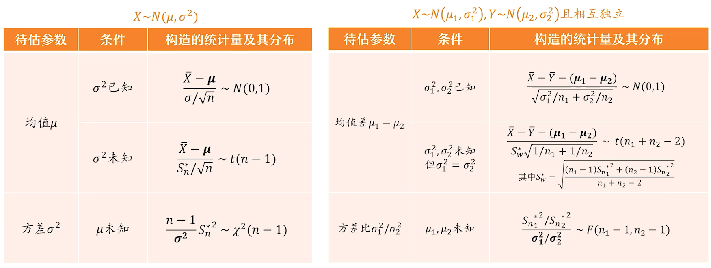

7.3.1 置信区间与枢轴变量的定义_哔哩哔哩_bilibili就是要估计P(θ^1≤θ≤θ^2)=1−αP\left(\hat{\theta}_{1} \leq \theta \leq \hat{\theta}_{2}\right)=1-\alphaP(θ^1≤θ≤θ^2)=1−α其中α\alphaα被称为置信度，一般在题目中会给出枢轴变量这是一个需要被构造的量，构造方法如下表补充一个表格里没写的:如果求方差σ2,μ已知，则可以用\sigma^2,\mu已知，则可以用σ2,μ已知，则可以用1σ2∑i=1n(xi−μ)2=∑i=1n(xi−μσ)2∼χ2(n)\frac{1}{\sigma^{2}} \sum_{i=1}^{n}\left(x_{i}-\mu\right)^{2}=\sum_{i=1}^{n}\left(\frac{x_{i}-\mu}{\sigma}\right)^{2} \sim \chi^{2}(n)σ21i=1∑n(xi−μ)2=i=1∑n(σxi−μ)2∼χ2(n)